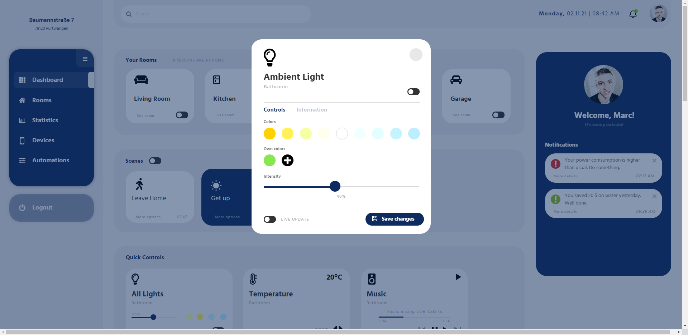
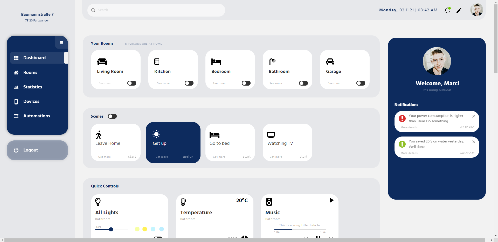
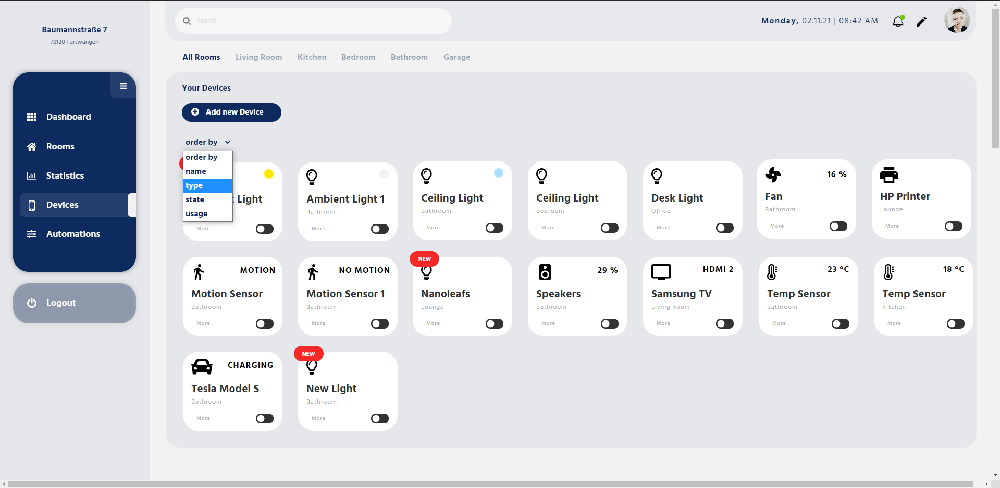

Marc Eberhard :: Interface Design :: OMB-5
Um meinen Prototypen verbessern zu können, habe ich in der vorherigen
Aufgabe die Top Findings
herausgearbeitet.
Diese waren:
Prio 1 - Muss geändert werden:
Prio 2 - Kann angepasst werden:
Prio 3 - Ist nicht so schlimm:
Prototyp skaliert noch nicht mit der Auflösung.
Aufgrund der kurzen Zeit, war es mir leider nicht möglich diesen Punkt umzusetzen, obwohl dieser Punkt bei einem richtigen Dashboard höchste Priorität haben sollte, um eine geräteübergreifende und responsive Ansicht zu gewährleisten
Der Status der Geräte rechts oben wird nicht immer erkannt.
Da mein Dashboard noch nicht in der Praxis genutzt wurde, fehlte den Probanden das direkte
Verständnis.
Ich denke, dass dieser Punkt in der Praxis hinfällig sein sollte.
Informationen zu einem Gerät sind nicht direkt ersichtlich.
Um die Informationen eines Gerätes deutlicher darzustellen, habe ich das Popup nochmals überarbeitet.
Dazu habe ich die Tabs "Controls, Information und Edit" hervorgehoben. Nun sollten diese besser sichtbar
sein.
Ebenso habe ich den "More"-Button mit einem hover-Effekt versehen. Aufgrund den vielen Kacheln,
habe ich den Hover-Effekt nur bei den wichtigsten Kacheln eingefügt.
Vorher:
Nachher:
Fehlermeldung wenn kein Raum ausgewählt ist.
Es wird nun eine Fehlermeldung angezeigt, wenn man ein neues Gerät hinzufügen möchte, aber noch keinen Raum ausgewählt hat.
Devices selber umbenennen können.
In dem "Edit Panel" eines Gerätes lassen sich nun die Geräte umbenennen und einem anderen Raum hinzufügen. Dies sollte die Übersichtlichkeit steigern, da es keine gleichen Geräte mehr geben sollte.
Controls für Lichtfarbe in den Kacheln deutlicher oder anders darstellen.
Um die Controls für die Lichtfarbe besser erkennbar zumachen, habe ich diesem ein Label hinzufügt. Dies
sollte die Erkennbarkeit steigern.
Genauso wie bei dem Status der Geräte denke ich, dass sich auch
dieser
Punkt beim öfteren Benutzen des Dashboards selber lösen wird.
Devices an der Seite müssen einklappbar sein
Die Devices in der Raumansicht sind nun einklappbar. Somit werden nicht zu viele Informationen direkt angezeigt, welche den Nutzer verwirren könnten. Bei einem Hover über das entsprechende Icon wird der Name des Gerätes als Tooltip angezeigt.
Nicht direkt in einen Raum springen. (Nur Auswahl zuerst)
Es wird nun zuerst eine Raumauswahl angezeigt, bevor man zu dem entsprechenden Raum gelangt.
Wordings anpassen. ( Scenes? -> Hilfe anbieten?)
Ich habe einige Wordings angepasst. Bei anderen denke ich, dass diese durch das Benutzen des Dashboards klar sein sollten. Ansonsten kann man beim ersten Benutzen des Dashboards, dem Nutzer ein Tutorial anbieten und diese in die Funktionen des Dashboards einführen.
„More options „ bei Geräte deutlicher benennen.
Diese Schaltfläche heißt nun nur noch "More". Dies beschreibt besser die Eigenschaften der Schaltfläche, da dort auch Informationen zu finden sind.
„Configure Layout“ muss prägnanter dargestellt werden.
Es gibt nun einen Bleistift direkt in der Navigationsleiste, welcher die gleichen Aktionen hervorruft. Ich denke aber, dass dieses Finding nur aufgrund der wenigen Probanden aufgefallen ist, und es dieses Icon vermutlich garnicht benötigt.
Geräte nach Räume und Typ trennen/sortieren lassen.
Dafür wurde bei den Geräten ein Dropdown-Menu hinzugefügt.
Direkter Handlungsvorschlag bei den Notifications.
Hierfür gibt es nun bei einem Klick auf "More details" eine Übersicht mit Handlungsempfehlungen die der Nutzer auch gleich ausführen kann. Je nach Notifications könnten hier weitere Informationen angezeigt werden.
„Alles aus“ – Schalter / Urlaubsmodus einbauen.
Hierfür kann/sollte vom Nutzer eine allgemeine Scene angelegt werden.
Ebenso habe ich das Dashboard an einigen weiteren Stellen angepasst um das Styling einheitlich und
übersichtlich zu gestalten.
Diese Änderungen kann ich leider nicht alle im Detail aufzählen.